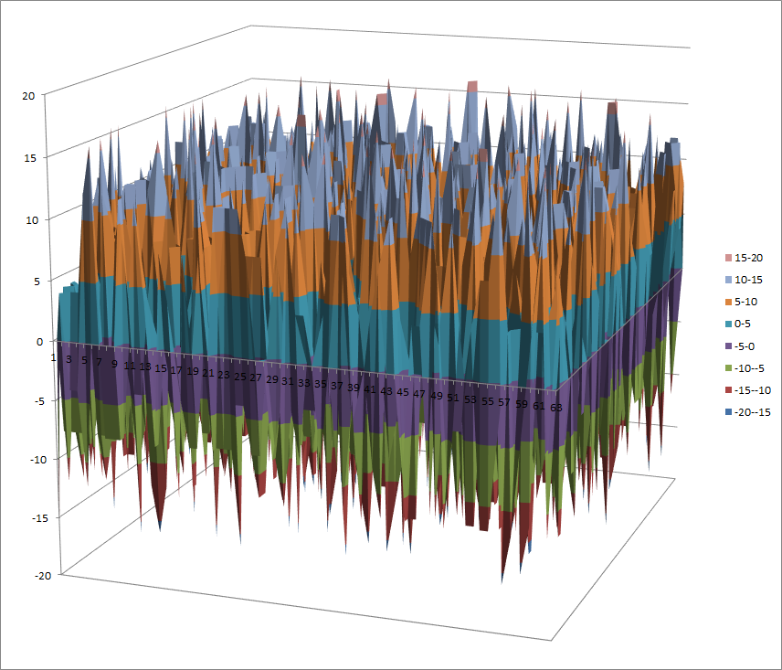

SC2000¶
Description¶
SC2000 is a block cipher invented by a research group at Fujitsu Labs. It was submitted to the NESSIE project, but was not selected. It was among the cryptographic techniques recommended for Japanese government use by CRYPTREC in 2003, however, has been dropped to “candidate” by CRYPTREC revision in 2013. It has three 3 S-boxes: S4,S5,S6
Summary¶
| S-box | size | NL | NL2 | LD | DEG | AI | MAXAC |  |
LP | DP |
|---|---|---|---|---|---|---|---|---|---|---|
| S4 | 4x4 | 4 | 0 | 0 | 2 | 2 | 16 | 1024 | 0.25 | 0.25 |
| S5 | 5x5 | 12 | 6 | 6 | 3 | 3 | 8 | 2048 | 0.0625 | 0.0625 |
| S6 | 6x6 | 24 | 14 | 12 | 5 | 3 | 16 | 8704 | 0.0625 | 0.0625 |
S4¶
Representations¶
Polynomial representation in ANF
Walsh Spectrum representation (except first row and column):

Other useful information in cryptanalysis¶
Cycle structure:
| Cycle length | Number of cycles |
|---|---|
| 2 | 1 |
| 3 | 1 |
| 11 | 1 |
There are 3 linear structures:
([0 1 0 1],[0 0 1 1])
([1 0 0 1],[0 0 1 1])
([1 1 0 0],[0 0 1 1])
It has no fixed points.
It has 2 negated fixed points: (0,0,1,1), (1,0,0,1)
S5¶
Representations¶
Polynomial representation in ANF
Walsh Spectrum representation (except first row and column):

Other useful information in cryptanalysis¶
Cycle structure:
| Cycle length | Number of cycles |
|---|---|
| 6 | 1 |
| 8 | 2 |
| 10 | 1 |
There are no linear structures
It has no fixed points. It has no negated fixed points
S6¶
Representations¶
Polynomial representation in ANF
Walsh Spectrum representation (except first row and column):
{kind=link}
Other useful information in cryptanalysis¶
Cycle structure:
| Cycle length | Number of cycles |
|---|---|
| 2 | 2 |
| 9 | 1 |
| 17 | 1 |
| 34 | 1 |
There are no linear structures
It has no fixed points. It has no negated fixed points